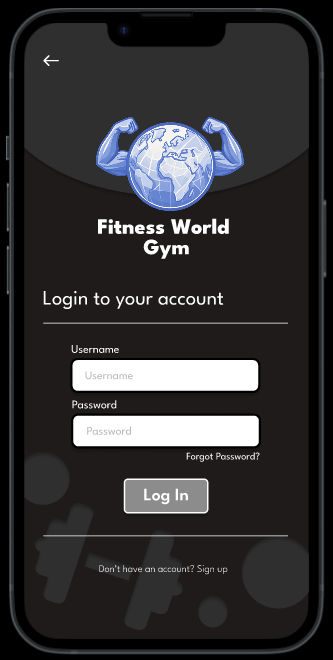
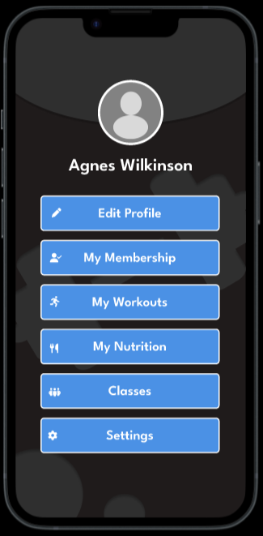
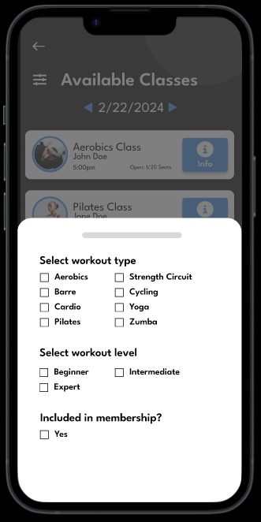
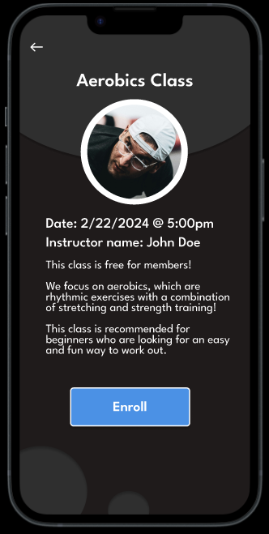

Digital Designer & UX-Focused Creator
I design user-centered digital experiences that prioritize clarity, usability, and visual impact.
Designed a mobile fitness app focused on creating a simple, intuitive way for users to track workouts and stay consistent.
Many fitness apps feel cluttered and overwhelming, making it difficult for users to quickly log workouts or track progress.
Create a clean, user-friendly interface that allows users to easily navigate, log workouts, and stay engaged.
Simplified Navigation: Designed a clear navigation structure to help users quickly access key sections.
Clean Layout: Used spacing and visual hierarchy to reduce clutter and improve readability.
Focused User Experience: Prioritized key actions like logging workouts to minimize friction.




Example screens showing navigation, profile pages, search methods, and class enrollment.
This project strengthened my ability to design with clarity and usability in mind. I focused on simplifying the user experience and making key actions easy to access.
Given more time, I would conduct user testing to validate design decisions and further refine navigation and interaction flows.
Developed an interactive experience using HTML, CSS, and JavaScript to create engaging problem-solving challenges.
Tools: HTML, CSS, JavaScript
Created a user-friendly instructional guide adopted by faculty, focusing on clarity and usability.
Tools: Adobe Creative Suite
Figma • Adobe Creative Cloud • HTML • CSS • JavaScript • UX Design • Wireframing • Prototyping